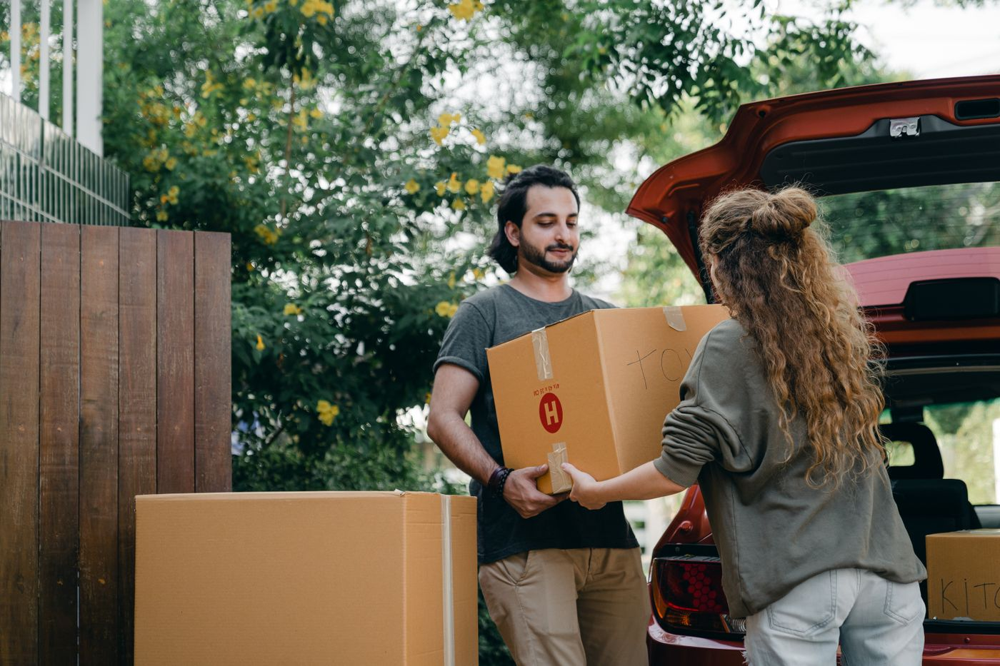
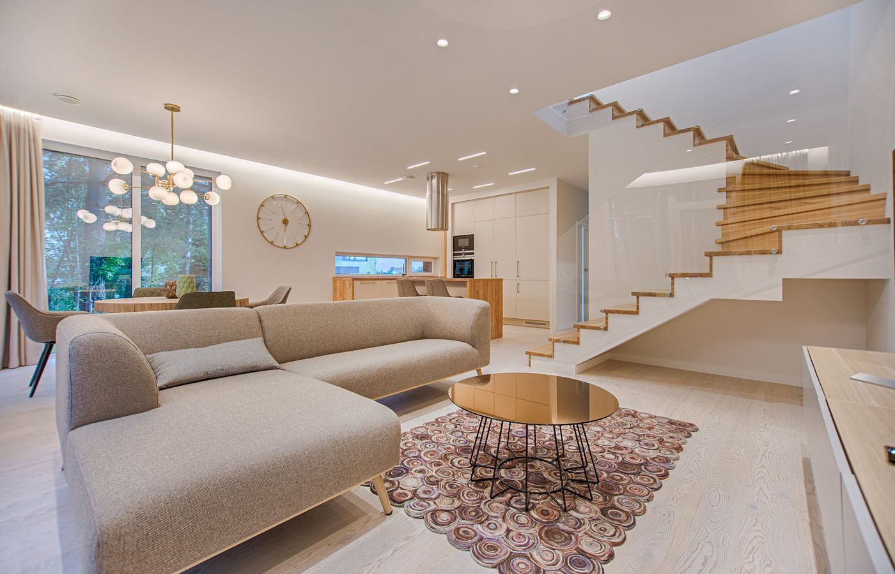

Koback Umzüge & Transport
Ihr ruhiger Partner am Umzugstag.
Zuverlässig, flexibel und erreichbar, wenn der Termin nicht warten kann.

Wofür wir stehen
Koback Umzüge & Transport plant sorgfältig und arbeitet so, dass der Tag überschaubar bleibt. Das Team berät persönlich und setzt den Auftrag so um, wie er besprochen wurde.
Für Beratung und Angebote sind wir rund um die Uhr telefonisch oder per E-Mail erreichbar.
Umzüge mit Pflegebedarf
Wir unterstützen pflegebedürftige, ältere, betreute Menschen und Menschen mit Behinderung, die ihren Umzug nicht mehr allein organisieren oder durchführen können. Jeder Schritt wird auf die persönliche Situation abgestimmt.
Liegt bereits eine Kostenzusage der Kranken- oder Pflegekasse oder eines anderen Kostenträgers vor, kann der Umzug entsprechend abgerechnet werden. In Ausnahmefällen helfen wir bei der Beantragung einer Kostenübernahme. Diese Unterstützung bieten wir im Rahmen einer verbindlichen Beauftragung für den anschließenden Umzug an, weil die Vorbereitung Zeit braucht. Eine Bewilligung können wir nicht garantieren.
